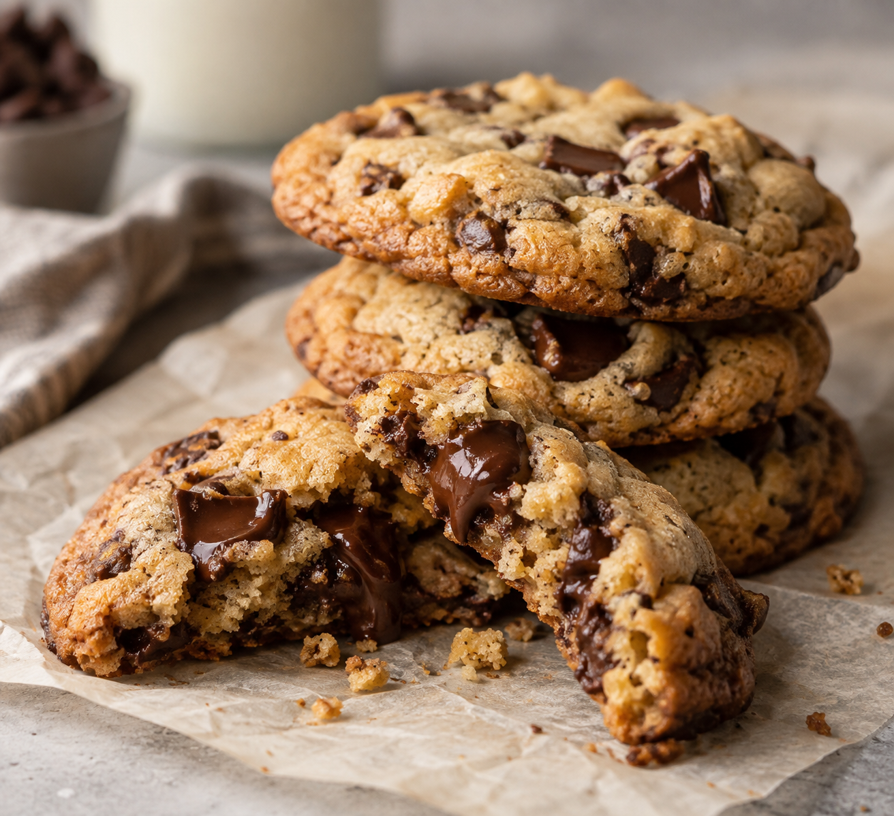

Home
Chocolate Chip Cookies

Description
These soft and chewy chocolate chip cookies have golden, buttery edges and centers packed with rich, melty chocolate. Made with simple pantry ingredients and a quick 30-minute chill, they’re an easy homemade treat for sharing—or enjoying warm with a cold glass of milk.
Ingredients
- ½ cup (113 g) unsalted butter, softened
- ¾ cup (150 g) packed light brown sugar
- ¼ cup (50 g) granulated sugar
- 1 large egg
- 2 teaspoons vanilla extract
- 1¾ cups (210 g) all-purpose flour
- ½ teaspoon baking soda
- ½ teaspoon fine salt
- 1 cup (170 g) semisweet chocolate chips
Steps
- Beat butter and sugars until creamy. Mix in egg and vanilla.
- Stir in flour, baking soda, and salt. Fold in chocolate chips.
- Chill dough for 30 minutes.
- Scoop onto a parchment-lined baking sheet, 2 inches apart.
- Bake at 350°F (175°C) for 10–12 minutes, until edges are golden.
- Cool on the baking sheet for 5 minutes. Enjoy!